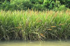
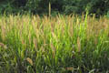
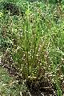
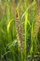
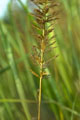
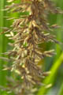

Diagnostic characters
Botany & morphology
Regeneration
Ecology
Distribution
Uses
Gregarious perennial grass, 2 – 3 m tall.; root stock flexible and spongy. Leaves linear. Spikelets pedicellate with long awns.
Leaves linear, smooth, acuminate, 1-1.5 m long.
Inflorescence panicle; spikelets pedicellate, 6 - 12 flowered.
Glumes 1 & 2 unequal, coriaceous, dorsally rounded, 1-nerved, keeled with a long awn; stamens 3.
Fruits grain, obliquely ovoid with large scutellum.
Culms 2 – 3 m tall, densely tufted from a sheathing root - stock with long, flexible branching fibrous roots.
Epigeal germination.
Pioneer along the muddy banks of creeks and channels in the intertidal regions of mangrove swamps.
Occurs in the east coast mangroves of Indian peninsula and in Andaman Islands, and extending into Burma, Malaysia and Vietnam.
Good fodder and thatching material; long wiry flexible roots used for cordage.
Top of the page